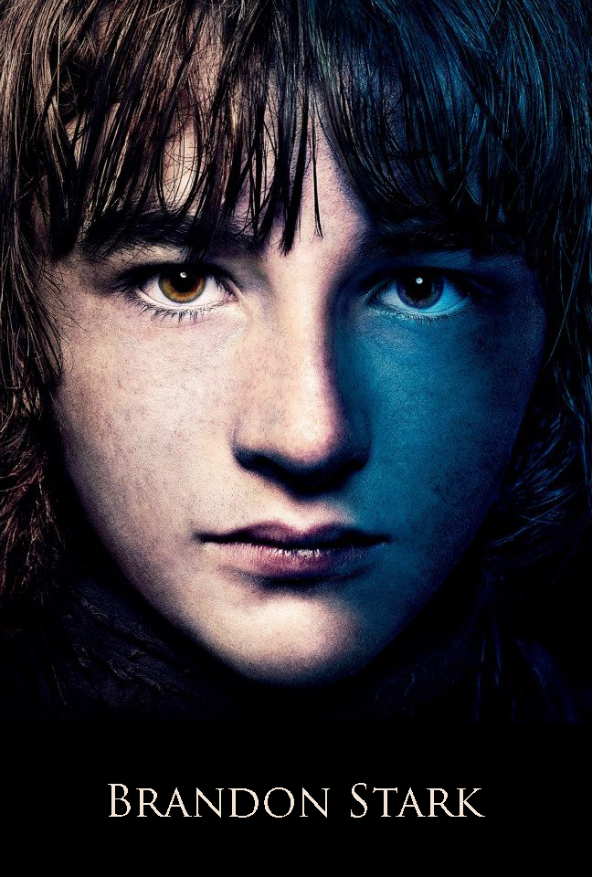

|

|
Brandon Stark
Brandon Stark, typically called Bran, is Eddard and Catelyn's second son. His life changed irrevocably when he suffers a crippling injury and relies on the servant Hodor to aid his mobility. He is usually accompanied by a direwolf named Summer and has prophetic dreams. He is one of the major POV characters in the books. In the TV series he is played by Isaac Hempstead-Wright.
Appearance and Character
Bran has inherited the Tully coloring from his mother, having auburn hair and blue eyes.[3][4]
He has a fascination with climbing and exploring along the walls and ramparts of Winterfell.[5][6] Like his siblings, he is dutiful and tough-minded.Citation needed He is usually accompanied by a direwolf named Summer, with whom he shares a strong warg connection.
History
Bran is the second son and fourth child of Lady Catelyn and Lord Eddard Stark, head of House Stark and Warden of the North. He was born at Winterfell in 291. He is named after his late uncle, Eddard's elder brother Brandon,Citation needed whose death was one major event in the series that led to Robert's Rebellion.
Bran has three older siblings (Robb, Sansa, and Arya) and one younger (Rickon). He also has a bastard half-brother, Jon Snow.Bran was educated by Maester Luwin and trained with weapons. He dreamed of becoming a knight of the Kingsguard.
|